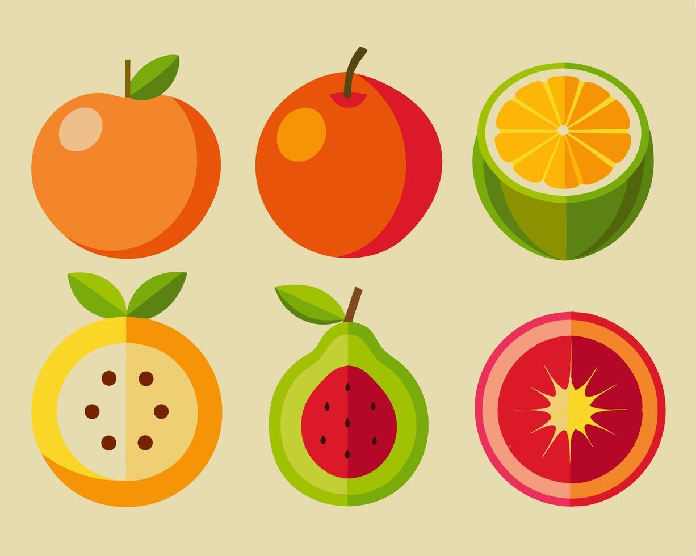
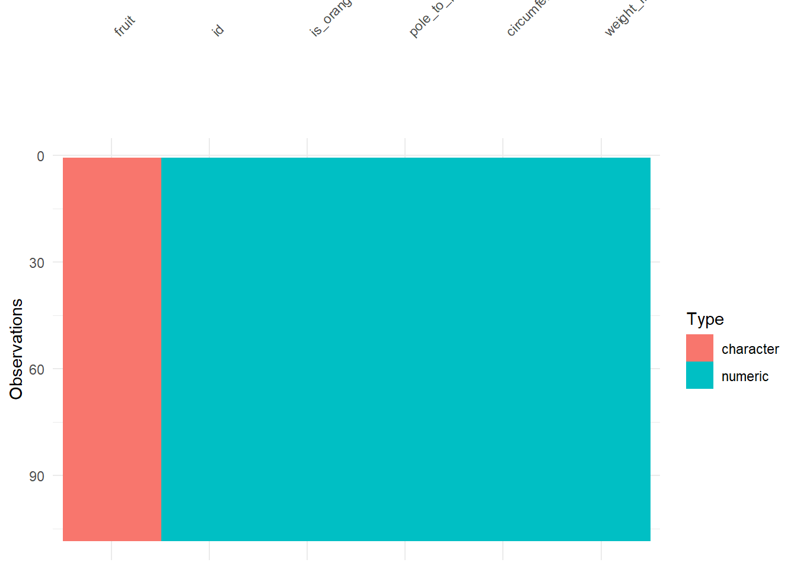
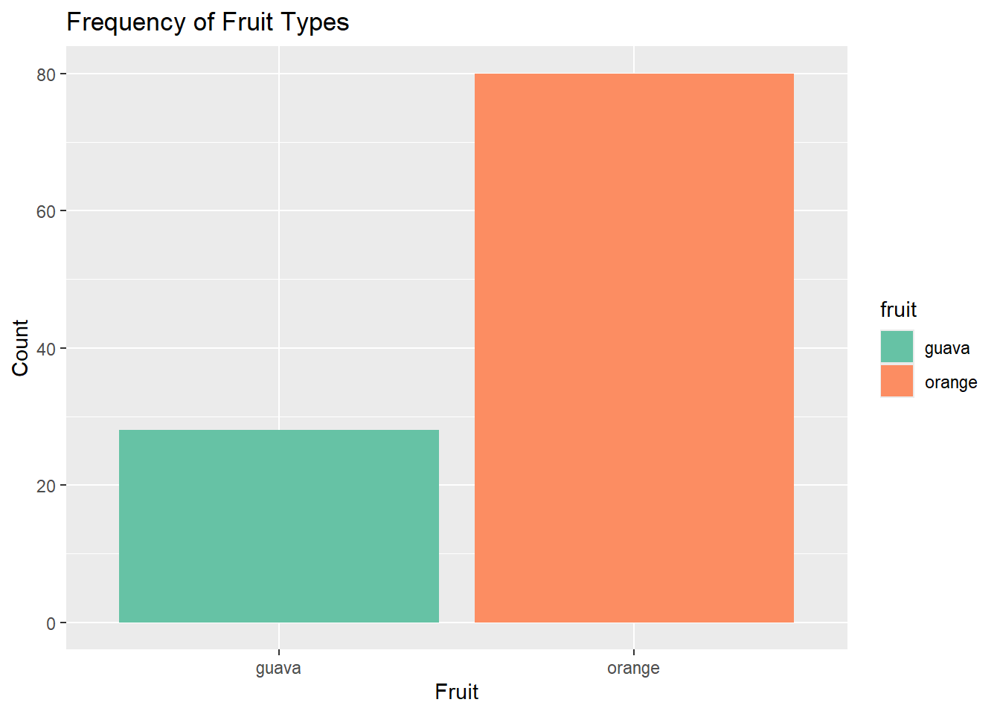
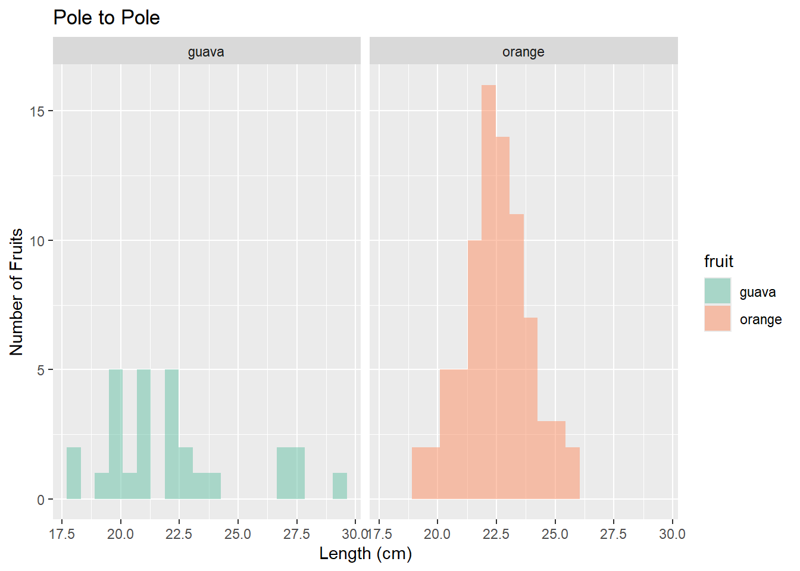
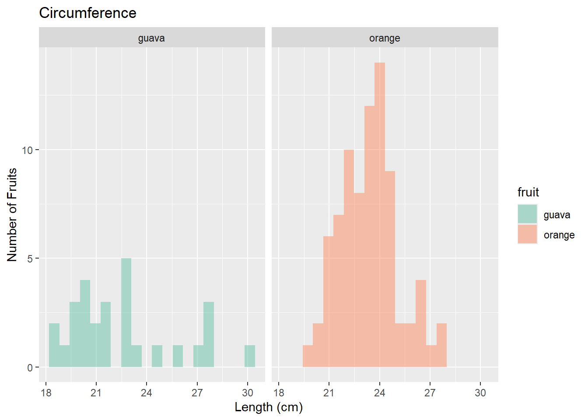
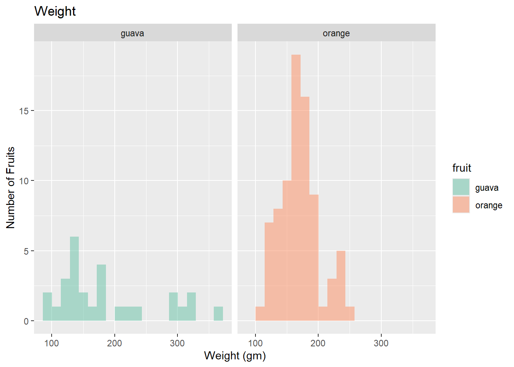
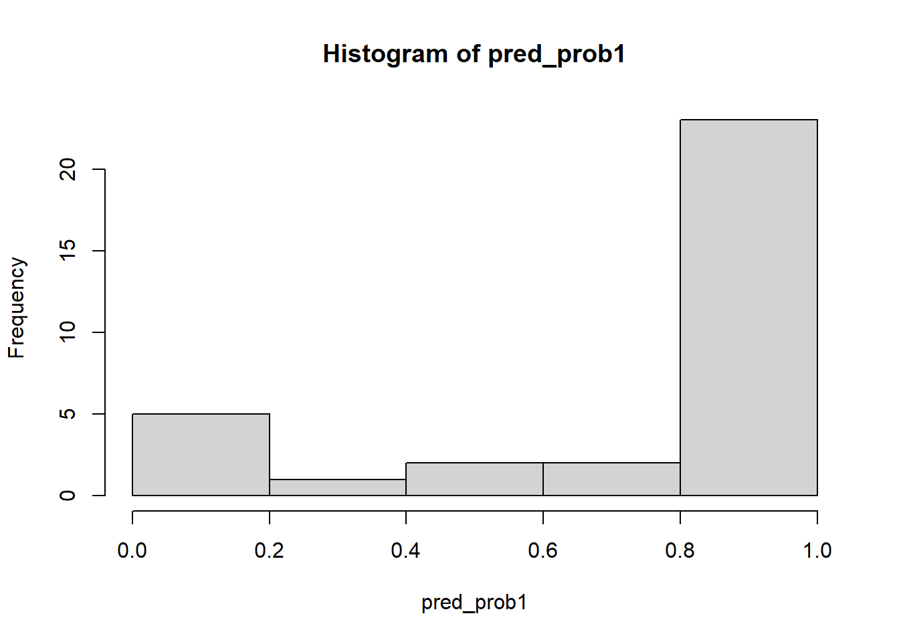
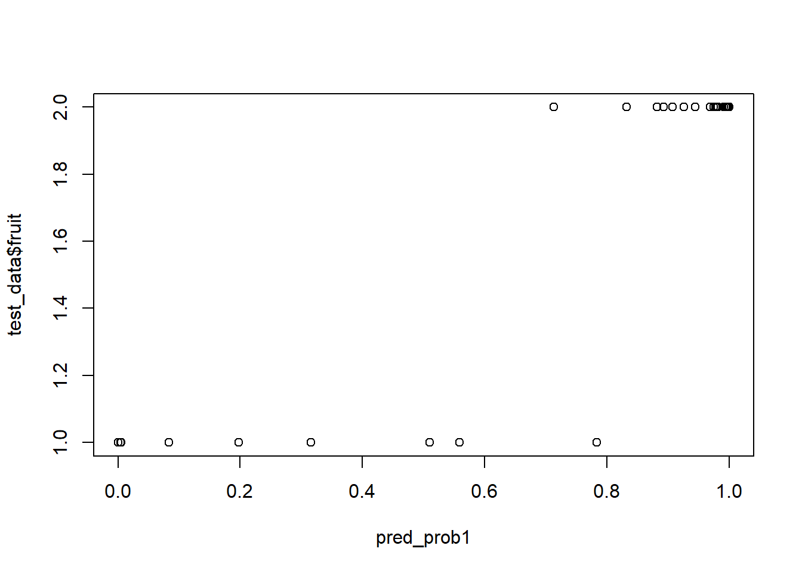

library(readr)
library(tidyverse)
library(dplyr)
library(ggformula)
library(janitor)
library(naniar)
library(visdat)
library(rsample)Orange or Guava?
Logistic Regression

This model accepts data and predicts if the fruit is an orange or a guava
Objective: The aim of this model is to accept variables from the user such as pole to pole measurement, circumference, weight etc of a fruit and predict whether it is an orange or a guava using logistic regression.
1. Setting up R Packages
2. Reading Data
fruit <- readr::read_csv("../../data/oranges_or_guavas.csv", show_col_types = FALSE)3. Examining and Cleaning Data
dim(fruit)[1] 108 6str(fruit)spc_tbl_ [108 × 6] (S3: spec_tbl_df/tbl_df/tbl/data.frame)
$ id : num [1:108] 1 2 3 4 5 6 7 8 9 10 ...
$ fruit : chr [1:108] "orange" "orange" "orange" "orange" ...
$ is_orange : num [1:108] 1 1 1 1 1 1 1 1 1 1 ...
$ pole_to_pole_in_cm : num [1:108] 22.5 23.6 22.8 23.9 22.5 22.8 23.6 20.5 21.9 19.8 ...
$ circumference_in_cm: num [1:108] 23.6 25.1 24.5 23.9 23.7 23.7 24.4 21.1 22 21 ...
$ weight_in_gm : num [1:108] 167 195 160 156 164 163 182 122 145 125 ...
- attr(*, "spec")=
.. cols(
.. id = col_double(),
.. fruit = col_character(),
.. is_orange = col_double(),
.. pole_to_pole_in_cm = col_double(),
.. circumference_in_cm = col_double(),
.. weight_in_gm = col_double()
.. )
- attr(*, "problems")=<externalptr> head(fruit)# A tibble: 6 × 6
id fruit is_orange pole_to_pole_in_cm circumference_in_cm weight_in_gm
<dbl> <chr> <dbl> <dbl> <dbl> <dbl>
1 1 orange 1 22.5 23.6 167
2 2 orange 1 23.6 25.1 195
3 3 orange 1 22.8 24.5 160
4 4 orange 1 23.9 23.9 156
5 5 orange 1 22.5 23.7 164
6 6 orange 1 22.8 23.7 163tail(fruit)# A tibble: 6 × 6
id fruit is_orange pole_to_pole_in_cm circumference_in_cm weight_in_gm
<dbl> <chr> <dbl> <dbl> <dbl> <dbl>
1 103 guava 0 21.2 21.3 152
2 104 guava 0 21.1 21.7 148
3 105 guava 0 18 18.8 93
4 106 guava 0 27.5 27.5 314
5 107 guava 0 20 19 112
6 108 guava 0 18 18.5 93names(fruit)[1] "id" "fruit" "is_orange"
[4] "pole_to_pole_in_cm" "circumference_in_cm" "weight_in_gm" visdat::vis_dat(fruit, sort_type = TRUE)
fruit_modified <- fruit %>% tidyr::drop_na()
visdat::vis_dat(fruit_modified, sort_type = TRUE)
fruit_modified <- fruit %>%
dplyr::mutate(across(where(is.character), as.factor)) %>%
relocate(where(is.factor))
glimpse(fruit_modified)Rows: 108
Columns: 6
$ fruit <fct> orange, orange, orange, orange, orange, orange, or…
$ id <dbl> 1, 2, 3, 4, 5, 6, 7, 8, 9, 10, 11, 12, 13, 14, 15,…
$ is_orange <dbl> 1, 1, 1, 1, 1, 1, 1, 1, 1, 1, 1, 1, 1, 1, 1, 1, 1,…
$ pole_to_pole_in_cm <dbl> 22.5, 23.6, 22.8, 23.9, 22.5, 22.8, 23.6, 20.5, 21…
$ circumference_in_cm <dbl> 23.6, 25.1, 24.5, 23.9, 23.7, 23.7, 24.4, 21.1, 22…
$ weight_in_gm <dbl> 167, 195, 160, 156, 164, 163, 182, 122, 145, 125, …fruit_modified %>%
DT::datatable(
style = "default",
caption = htmltools::tags$caption(
style = "caption-side: top; text-align: left; color: black; font-size: 100%;", "Orange or Guava Dataset (Clean)"
),
options = list(pageLength = 10, autoWidth = TRUE)
) %>%
DT::formatStyle(
columns = names(fruit_modified),
fontFamily = "Arial",
fontSize = "12px",
)4. Data Dictionary
Quantitative Data
- id (int): A unique identification number assigned to each fruit in the dataset.
- pole_to_pole_in_cm (dbl): The measurement of the fruit from top to top, measured in centimeters.
- circumference_in_cm (dbl): The measurement around the widest part of the fruit, measured in centimeters.
- weight_in_gm (dbl): The total mass of the fruit, measured in grams.
Qualitative Data
- fruit (fct): The type or category of the fruit (orange or guava).
- is_orange (int/fct): A binary indicator (1- orange, 0- guava).
summary(fruit_modified) fruit id is_orange pole_to_pole_in_cm
guava :28 Min. : 1.00 Min. :0.0000 Min. :18.00
orange:80 1st Qu.: 27.75 1st Qu.:0.0000 1st Qu.:21.22
Median : 54.50 Median :1.0000 Median :22.30
Mean : 54.50 Mean :0.7407 Mean :22.41
3rd Qu.: 81.25 3rd Qu.:1.0000 3rd Qu.:23.23
Max. :108.00 Max. :1.0000 Max. :29.33
circumference_in_cm weight_in_gm
Min. :18.50 Min. : 93.0
1st Qu.:21.65 1st Qu.:143.0
Median :23.05 Median :165.5
Mean :23.16 Mean :174.1
3rd Qu.:24.32 3rd Qu.:188.2
Max. :30.13 Max. :365.0 5. Graphs
gf_bar(~ fruit, data = fruit_modified, fill = ~ fruit) %>%
gf_refine(scale_fill_brewer(palette = "Set2")) %>%
gf_labs(title = "Frequency of Fruit Types",
x = "Fruit",
y = "Count")
fruit_modified %>%
gf_histogram(~ pole_to_pole_in_cm | fruit,
bins = 20,
fill = ~ fruit) %>%
gf_refine(scale_fill_brewer(palette = "Set2")) %>%
gf_labs(title = "Pole to Pole",
x = "Length (cm)",
y = "Number of Fruits")
fruit_modified %>%
gf_histogram(~ circumference_in_cm | fruit,
bins = 20,
fill = ~ fruit) %>%
gf_refine(scale_fill_brewer(palette = "Set2")) %>%
gf_labs(title = "Circumference",
x = "Length (cm)",
y = "Number of Fruits")
fruit_modified %>%
gf_histogram(~ weight_in_gm | fruit,
bins = 20,
fill = ~ fruit) %>%
gf_refine(scale_fill_brewer(palette = "Set2")) %>%
gf_labs(title = "Weight",
x = "Weight (gm)",
y = "Number of Fruits")
6. Logistic Regression
fruit_modified$fruit <- as.factor(fruit_modified$fruit)levels(fruit_modified$fruit)[1] "guava" "orange"prop- proportion - 70% training, 30% testing strata- fruit- to make sure the training and testing sets have a balanced mix of guavas and oranges
set.seed(1013)
split <- initial_split(fruit_modified, prop = 0.7, strata = "fruit")
train_data <- training(split)
test_data <- testing(split)fruit_glm <- glm(fruit ~ pole_to_pole_in_cm + circumference_in_cm +
weight_in_gm,
data = train_data,
family = binomial)
summary(fruit_glm)
Call:
glm(formula = fruit ~ pole_to_pole_in_cm + circumference_in_cm +
weight_in_gm, family = binomial, data = train_data)
Coefficients:
Estimate Std. Error z value Pr(>|z|)
(Intercept) -65.88513 19.17330 -3.436 0.00059 ***
pole_to_pole_in_cm 0.55038 0.63858 0.862 0.38875
circumference_in_cm 3.93125 1.20045 3.275 0.00106 **
weight_in_gm -0.20033 0.06128 -3.269 0.00108 **
---
Signif. codes: 0 '***' 0.001 '**' 0.01 '*' 0.05 '.' 0.1 ' ' 1
(Dispersion parameter for binomial family taken to be 1)
Null deviance: 84.895 on 74 degrees of freedom
Residual deviance: 36.414 on 71 degrees of freedom
AIC: 44.414
Number of Fisher Scoring iterations: 7type = “response”: This tells R to give you the probabilities (numbers between 0 and 1) that a fruit is an “orange” rather than just a “yes/no” answer
hist- The histogram shows you how “confident” the model is. If most values are near 0 or 1, the model is very certain; if they are all near 0.5, it’s guessing.
pred_prob1 <- predict(fruit_glm, newdata = test_data, type = "response")
pred_prob1 1 2 3 4 5 6
0.9802896253 0.9260344425 0.9076546999 0.8923671949 0.9915519595 0.9782794524
7 8 9 10 11 12
0.9814025480 0.8823724808 0.9981738667 0.9440209292 0.9987322985 0.7130318575
13 14 15 16 17 18
0.9746532810 0.9962526606 0.9994903183 0.9684528652 0.9985186031 0.9995720754
19 20 21 22 23 24
0.9961648485 0.9999997473 0.9949853309 0.9778964287 0.8323621136 0.9938354539
25 26 27 28 29 30
0.3157039164 0.5586605216 0.0835979275 0.1980350726 0.0056733151 0.5102161673
31 32 33
0.0002986894 0.7834058601 0.0038942976 hist(pred_prob1)
plot(pred_prob1, test_data$fruit)
manually deciding that if the probability is greater than 50%, you’ll label it an “orange.” otherwise, it stays as the default “guava.”
why 33- guavas- 28, oranges- 80 total- 108 30% testing- 30% of 108 = 33
first it declares that all 33 of these test fruits are guavas, then it actually checks line by line, if the probability is higher than 0.5 (50%), then it changes it to orange
nrow(test_data)[1] 33pred_class1 <- rep("guava",33)
pred_class1[pred_prob1 > 0.5] <- "orange"table(Actual = test_data$fruit, Predicted = pred_class1) Predicted
Actual guava orange
guava 6 3
orange 0 24summary(fruit_glm)
Call:
glm(formula = fruit ~ pole_to_pole_in_cm + circumference_in_cm +
weight_in_gm, family = binomial, data = train_data)
Coefficients:
Estimate Std. Error z value Pr(>|z|)
(Intercept) -65.88513 19.17330 -3.436 0.00059 ***
pole_to_pole_in_cm 0.55038 0.63858 0.862 0.38875
circumference_in_cm 3.93125 1.20045 3.275 0.00106 **
weight_in_gm -0.20033 0.06128 -3.269 0.00108 **
---
Signif. codes: 0 '***' 0.001 '**' 0.01 '*' 0.05 '.' 0.1 ' ' 1
(Dispersion parameter for binomial family taken to be 1)
Null deviance: 84.895 on 74 degrees of freedom
Residual deviance: 36.414 on 71 degrees of freedom
AIC: 44.414
Number of Fisher Scoring iterations: 77. Predicting Model
unknown_fruit <- data.frame(
pole_to_pole_in_cm = 25.2,
circumference_in_cm = 18.5,
weight_in_gm = 150
)
prob_pred2 <- predict(fruit_glm, newdata = unknown_fruit, type = "response")
prob_pred2 1
8.809131e-05 Thus, we can conclude that the unknown fruit was a guava